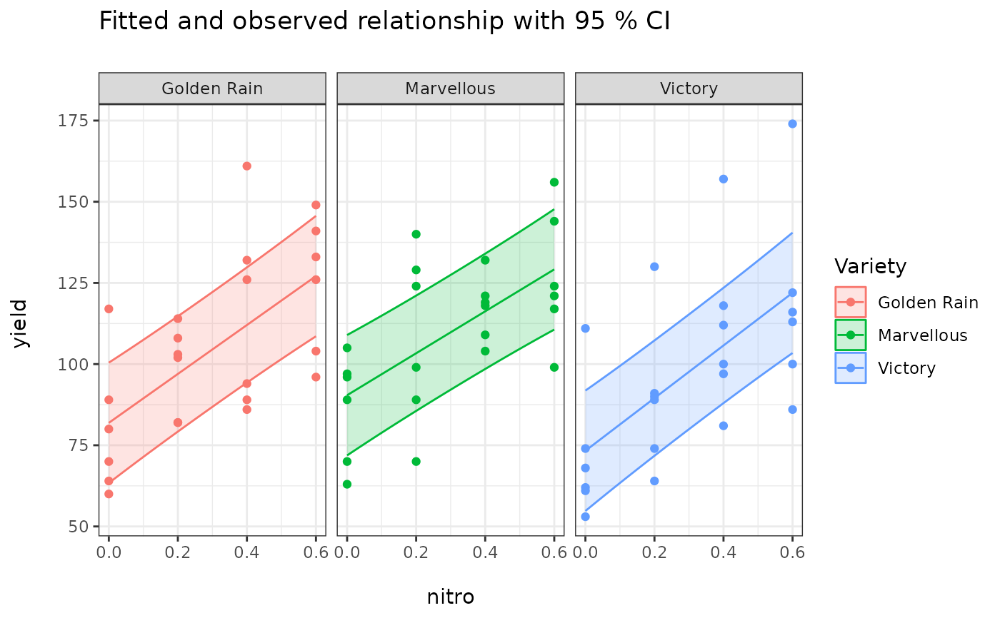
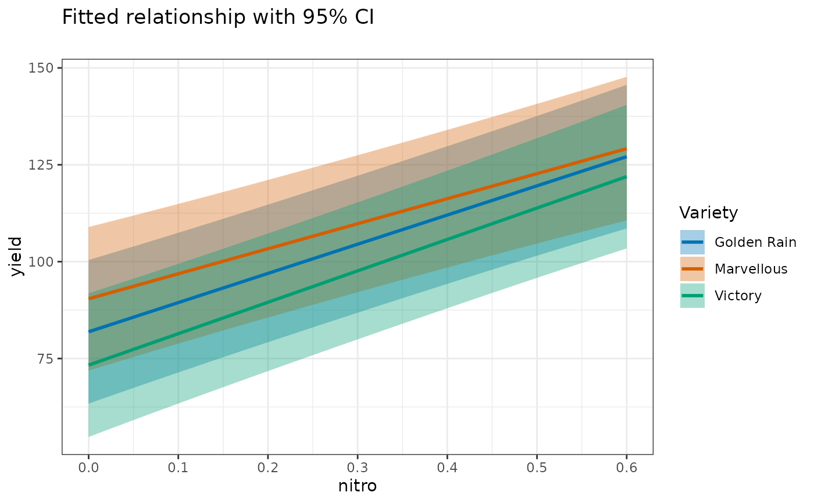

Predicted Means of a Linear Model with Covariate Variable(s)
Source:R/covariatemeans.R
covariatemeans.RdPredicted means along a covariate for each level of a factor term (curves) with their confidence limits, or
the difference between two of the curves with its band. The result holds the tables in the layout of
predictmeans and the plot, which autoplot() returns.
Usage
covariatemeans(model, modelterm=NULL, covariate, as_is=FALSE, at=NULL, data=NULL,
conf_level=0.95, trans=NULL, cov_reduce=mean, exclude=NULL,
weights=c("equal", "proportional", "outer", "cells", "flat"),
df_method=c("auto", "Kenward-Roger", "Satterthwaite", "containment",
"between-within", "KR-expected", "KR-average", "inner-outer", "residual"),
vcov_adjust=TRUE, contr=NULL, contr_scale=c("model", "response"),
band=c("pointwise", "simultaneous"), bias_adjust=FALSE, sigma=NULL,
mean_type=c("conditional", "overall"), plot=getOption("predictmeans.plot", FALSE),
plot_args=list(), ...)Arguments
- model
A fitted model, as for
predictmeans(aov,lm,glm,gls,lme,lmer,glmer,glmmTMB,gam).- modelterm
Name (in "quotes") of the factor term whose lines are predicted, e.g. "A" or "A:B", given exactly as it appears in the printed model.
- covariate
Name (in "quotes") of a covariate of
model, or two names for surfaces (thenatis a matrix with a column per covariate, orNULLfor a grid; not withcontroras_is).- as_is
TRUE: each line only over the range of the covariate observed in its group (rows outside it are left out of the result); the defaultFALSEuses the values ofatfor every group.- at
The values of
covariateat which the lines are predicted (covariateVbefore 2.0); by default 50 values over the observed range. SeeKmatrix.- data
The data used to fit the model; needed in some cases, e.g. when a variable is transformed in the model formula.
- conf_level
The confidence level of the limits, the default is 0.95 (
level = 0.05before 2.0). The limits are for each line on its own: whether the bands of two groups overlap is not a test of their difference (the lines are estimated from the same model and are correlated; seeletter_ciinpredictmeans). Usecontrfor the band of the difference between two groups, or compare groups at chosen covariate values withpredictmeans(covariate =) and their slopes withpm_slopes.- trans
A function object for calculating the back transformed means, e.g.
trans=exp. When it is not given, the inverse link of the model is used, or the inverse of a transformation of the response in the model formula (log(y),sqrt(y), ...; seepredictmeans), with a message;trans = Ikeeps the model scale. The back-transformed line is the back-transformed fitted value. (Before 2.0 half the standard error of the fitted value was added insideexp()for a log.)- plot_args
Superseded by the arguments of
autoplot.pm_curves, kept for 1.x scripts: a named list (names may be abbreviated) oftrellis(FALSE: one panel;panel = character(0)),plotord(the order of the factors, e.g.c(2, 1)orc("B", "A"): the first colours the lines, the others make the panels;group,panel; giving it draws the plot),mtitle(title),ci(interval),point(data),jitterv(jitter),scalesand the colours ofstyle. Before 2.0 these were arguments of their own; given so they stop with this spelling.- ...
Not used: arguments removed in 2.0 (
level,Df,covariateV,transOff,responsen,newwd, the plot settings) stop with their 2.0 spelling (seevignette("migrating")).- cov_reduce
How covariates that are not varied are handled when building the predicted means: a function such as
mean(the default) ormedian, or"average"to average the predictions over the observed covariate values (e.g. means adjusted for a spatial smooth in agam). SeeKmatrix.- exclude
For
gammodels: smooth terms to leave out of the predictions. The default excludes random-effect smooths. SeeKmatrix.- weights
Passed to
Kmatrix: how the cells of the factors that are not inmodeltermare weighted when averaging over them:"equal"(the default; equal weights),"proportional"(weights proportional to the frequencies of those cells in the data, the same for every mean, as SASLSMEANS / OM),"outer"(products of each factor's own frequencies),"cells"(each mean weights the cells by their own frequencies) or"flat"(equal weights over the non-empty cells). The definitions are those of emmeans.- df_method, vcov_adjust
As in
predictmeans(a number indf_methodis a fixed df,Dfbefore 2.0): by default Kenward-Roger df (each point of the curves has its own) and adjusted standard errors for models fitted by REML (lmer,lme,gls). predictmeans 1.x used the unadjusted covariance and, forlmer, one df per term;vcov_adjust = FALSEand, forlmeandgls,df_method = "containment"give its results.- contr
Two levels of
modelterm, by their names as in the data (e.g.c("Golden Rain", "Victory")) or by their numbers (c(1, 3); for a term with several factors the combined labels such as"a:x"): the difference between the first and the second along the covariate, with its confidence band, is returned and plotted instead of the lines. See ‘Comparing two lines’.- contr_scale
With
contr: what is plotted."model"(the default) is the difference on the scale of the model, where the test is made; for a log link or a log response it is shown as the ratio of the two lines and for a logit link as the odds ratio (exact: exp of the difference and of its limits)."response"is the difference of the back-transformed lines, in the units of the response, with a delta-method band; it describes the size of the difference, the test stays on the model scale.- band
With
contr:"pointwise"(the default) gives limits at the confidence levelconf_levelfor each covariate value on its own;"simultaneous"gives Scheffe limits that hold for all covariate values together, for saying over which range of the covariate the lines differ.- mean_type
Only for
glmmTMBfits with zero inflation (ziformula; ignored, with a message, for other models):"conditional"(default), curves of the means of the count part, \(\mu\);"overall", curves of the overall means \((1 - \pi)\mu\) (\(\pi\) the probability of an extra zero), their bands \(\exp(\log m \mp crit\,SE)\) with the SE of \(\log m\) from the joint covariance of the count and zero-inflation coefficients (delta method), and withcontrthe ratio and the difference of the overall means. Log-link count families only.- plot
Draw the plot now? The default is
FALSE(since 2.0; 1.x drew it):autoplot()of the result draws it (autoplot.pm_curves: layouts, scales, data), and$pltholds the default plot.plot = TRUE, oroptions(predictmeans.plot = TRUE)for a whole session, draws it as 1.x did;plot_args = list(plotord = )also draws it.- bias_adjust, sigma
For back-transformed lines (a link, a transformed response or
trans), as inpredictmeans. By default a line is the back-transformed fitted value: the median of the response for a transformed response (the geometric mean for a log), and the response of a typical cluster (random effects at zero) for a generalized linear mixed model.bias_adjust = TRUEgives the mean of the response instead (for a mixed model: averaged over the clusters), computed over the variation on the model scale: the residual variance for a transformed response plus the variances of the random intercepts, orsigma^2whensigmais given (needed with random slopes). It is exact (for a log the factor \(exp(\sigma^2/2)\), for a square root \(+ \sigma^2\));"taylor"is the second-order formula of emmeans. Use it for totals and expected amounts; ratios and tests do not need it. The limits treat the variance as known. Withcontrthe response-scale difference is that of the adjusted lines.
Value
An object of class c("covariatemeans", "pm_curves"), a list. Its tables have the layout of
predictmeans (columns estimate, std.error, df, conf.low,
conf.high, ..., the covariate under its own name; see tidy.pm_curves); tidy() and
as.data.frame() return them, autoplot() the plot, and print() shows a summary.
- means
The curves: one row per level of
modeltermand covariate value (NULLwithcontr).- pairs
With
contr: the difference of the two curves at each covariate value.- settings
The options that produced them (df method, level, band, back-transformation, ...).
- plt
autoplot()of the result withplot_args(aggplot); drawn only withplot = TRUE.- pred_df
(
pltdfbefore 2.0;x$pltdfstill gives it, with a message once per session) The 1.x table: the fitted values with their limits, or withcontrthe differences on the model scale and, when there is a back-transformation, on the response scale.- test, significant
With
contr: the joint F test that the two lines are the same (numerator and denominator df, F, p-value), and the ranges of the covariate where the band leaves out zero.
Comparing two lines
Whether the bands of two lines overlap does not say whether the lines differ: the lines are estimated from the same model and are correlated. The band of their difference does, and it is computed from the contrast of the two lines, not from their limits.
The scale of the test. The difference is tested on the scale of the model (the link, or the
transformed response): there the model is additive, the estimates are closest to normal and the standard
error does not depend on the mean. \(d = (K_a - K_b)\hat\beta\), \(SE^2 = (K_a - K_b) V (K_a - K_b)'\),
limits \(d \pm c\,SE\) (columns diff, ses, Df, LL, UL). With a log
the difference back-transforms exactly to a ratio and with a logit to an odds ratio (columns ratio
or odds.ratio with their limits): the limits leave out 1 exactly when those of diff leave out
0, so nothing is approximated. For other transformations (square root, probit, a power) the
back-transformed difference has no meaning and the model scale is shown.
Why back-transform. Only to read the size of the difference in the units of the response; it is not
needed to decide whether the lines differ. The response-scale difference \(h(\eta_a) - h(\eta_b)\) is
another quantity: its standard error is an approximation (the delta method, gradient
\(h'(\eta_a) K_a - h'(\eta_b) K_b\); columns response.diff, response.ses,
response.LL, response.UL), it depends on the values of the other variables of the model, and
lines that are parallel on the model scale are not parallel on the response scale. Its band can disagree
with the test near the boundary, so with contr_scale = "response" the covariate values where the
lines differ are still those of the model scale (marked along the axis). For a generalized linear mixed
model it is the difference for a typical cluster (random effects at zero), as the lines are.
Significance at a level. Three questions have three answers:
At one covariate value chosen beforehand: the pointwise band (
band = "pointwise"); the lines differ at the level1 - conf_levelwhen it leaves out zero (one for a ratio).Over which range of the covariate: looking at many values needs wider limits.
band = "simultaneous"uses Scheffe's critical value \(c = \sqrt{r F_{1-\alpha;\,r,\,df}}\), \(r\) the rank of the contrasts along the covariate (2 for straight lines: the Working-Hotelling band). It holds for every covariate value at once and is slightly conservative over a limited range.Whether the lines differ anywhere: the joint F test that all the differences along the covariate are zero (
testin the result).
Each set of limits in pred_df has a column that says whether it includes the value of no difference:
includes0 for diff, ratio.includes1 or odds.ratio.includes1 (always equal to
includes0) and response.includes0 for the response-scale difference (which can differ from
includes0 near the boundary). Column significant (!includes0) and significant in
the result (the ranges of the covariate) follow the band asked for, on the model scale.
Zero inflation (glmmTMB)
For a glmmTMB fit with zero inflation (ziformula) the means are those of the conditional (count)
part, \(\mu\), as emmeans and predict(type = "conditional") give, not the overall mean
\((1 - \pi)\mu\) (\(\pi\) the probability of an extra zero); ratios are of these means, and equal the
ratios of overall means only when \(\pi\) is the same. A message says so and settings$component is
"conditional". The two can order treatments differently when \(\pi\) differs between them.
mean_type = "overall" (predictmeans(), covariatemeans(), semipred()) gives the overall
means and their ratios.
Examples
library(predictmeans)
data(Oats, package="nlme")
fm <- lme(yield ~ nitro*Variety, random=~1|Block/Variety, data=Oats)
cm <- covariatemeans(fm, "Variety", covariate="nitro")
ggplot2::autoplot(cm)

ggplot2::autoplot(cm, panel = character(0), data = FALSE) # one panel, no data

covariatemeans(fm, "Variety", covariate="nitro", at=seq(0, 0.6, 0.3))
#> Curves of 'Variety' along nitro
#> 95% limits; Kenward-Roger df
#> Variety nitro estimate std.error df conf.low conf.high
#> Golden Rain 0.0 81.90 8.571 12.849 63.36 100.44
#> Golden Rain 0.3 104.50 7.797 8.869 86.82 122.18
#> Golden Rain 0.6 127.10 8.571 12.849 108.56 145.64
#> Marvellous 0.0 90.42 8.571 12.849 71.88 108.95
#> Marvellous 0.3 109.79 7.797 8.869 92.11 127.47
#> Marvellous 0.6 129.17 8.571 12.849 110.63 147.70
#> Victory 0.0 73.30 8.571 12.849 54.76 91.84
#> Victory 0.3 97.62 7.797 8.869 79.95 115.30
#> Victory 0.6 121.95 8.571 12.849 103.41 140.49
#> autoplot(x) draws the plot (layouts: ?autoplot.pm_curves).
# the difference between two varieties along nitro, with a simultaneous band
# (the two levels by name, or by number: contr=c(1, 3))
cd <- covariatemeans(fm, "Variety", covariate="nitro", contr=c("Golden Rain", "Victory"),
band="simultaneous")
cd$settings$test
#> df1 df2 F.ratio p.value
#> 1 2 21.59705 0.5146026 0.6048849
head(as.data.frame(cd))
#> level1 level2 nitro estimate std.error df statistic
#> 1 Golden Rain Victory 0.00000000 8.600000 8.684676 21.57462 0.9902500
#> 2 Golden Rain Victory 0.01224490 8.529592 8.567347 20.58273 0.9955931
#> 3 Golden Rain Victory 0.02448980 8.459184 8.453379 19.63654 1.0006867
#> 4 Golden Rain Victory 0.03673469 8.388776 8.342909 18.73710 1.0054976
#> 5 Golden Rain Victory 0.04897959 8.318367 8.236079 17.88507 1.0099912
#> 6 Golden Rain Victory 0.06122449 8.247959 8.133031 17.08076 1.0141310
#> p.value p.adj conf.low conf.high adj.conf.low adj.conf.high
#> 1 0.3330287 0.6191042 -9.431527 26.63153 -14.22282 31.42282
#> 2 0.3310091 0.6162890 -9.309200 26.36838 -14.06393 31.12311
#> 3 0.3291509 0.6136450 -9.195202 26.11357 -13.91598 30.83435
#> 4 0.3274667 0.6111909 -9.089732 25.86728 -13.77922 30.55677
#> 5 0.3259693 0.6089456 -8.992966 25.62970 -13.65382 30.29056
#> 6 0.3246712 0.6069286 -8.905059 25.40098 -13.53996 30.03588